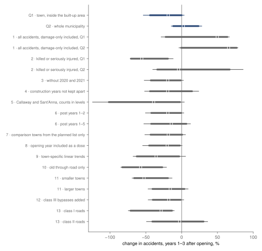
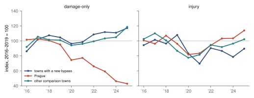

Research · roads · Czech bypasses and police-recorded accidents, 2016–2025
Injury accidents in Czech towns after a bypass opened: −19 %, underpowered
Registered result: in 35 Czech towns, injury accidents inside the town changed by −19 % in three years after the bypass opened, against towns still waiting (95 % −53 % to +3 %), underpowered.
- inside the town (Q1)
- −18.8 % injury accidents, years 1–3 after opening · 95 % −53.4 to +3.4 % · underpowered · registered
- whole municipality (Q2)
- +2.3 % injury accidents · 95 % −14.4 to +28.1 % · underpowered · registered
- on the bypass (Q3)
- 0.80 injury accidents per km and year, 17 bypasses · 57 % at junctions · count-based rate, no interval, no label
- towns
- 35 treated · 50 comparison treated towns on 31 bypasses opened 2020–2024 · administrative count
Overwhelmed? Here's the short version
- The interval is too wide to tell a fall of a fifth from no change. With 35 towns the study could have told only a change of about 28 % from zero, which is why the registered label is underpowered.
- Per town and year, the model puts −1.37 injury accidents inside the built-up area and +0.96 outside it, in the rest of the municipality. The author expected accidents to move onto the bypass; a smaller count inside and a larger one outside is consistent with that, but neither part is clear of zero.
- The comparison group leans on Prague, which reaches it through the bypass of Úvaly and holds 83 % of the comparison towns' injury accidents. Prague's injury accidents rose by +7 % over the period while the other comparison towns' changed by −3 %, so against them alone the fall would look smaller. A re-estimate without Prague, added after the results and not registered, gives −15.3 % (95 % −52.7 to +7.0 %), still underpowered by the registered rule.
- Most checks point the same way, some with 95 % intervals below zero (killed or seriously injured, the old through road, class I roads, smaller towns); they do not change the label. The check with damage-only crashes included points the other way, and counts added after the results are consistent with a fall in recorded damage-only crashes in Prague being the main source. All of this is association around the opening date, not a measured effect of the bypass.
A bypass takes through traffic out of a town. Elvik, Amundsen and Hofset found 19 % fewer injury accidents after 20 Norwegian bypasses, in a before-and-after study that allowed for regression to the mean and general trends, and about a quarter fewer accidents on average in a meta-analysis of earlier evaluations5. Towns open their bypasses at different times, which calls for estimators built for staggered adoption67. Czech towns have opened dozens of bypasses since 2008, and the Czech police publish every recorded accident with its coordinates from 20161. This study asks how police-recorded injury accidents changed inside a town in the first three years after its bypass opened (Q1), on the whole territory of its municipality (Q2), and how many accidents happen on the bypass itself (Q3), with towns still waiting for their bypass as the comparison. The design, the list of bypasses and the rules for labelling a result were registered before any accident was counted for a place or a year.
The registered estimate for Q1 is −18.8 %, with a 95 % interval from −53.4 to +3.4 %. Its direction and size are close to the Norwegian estimate, and the interval is wide enough that the registered label is underpowered. For the whole municipality the estimate is +2.3 %, also underpowered. On the 17 bypasses with a mapped line there were 0.80 injury accidents per kilometre and year, 57 % of them at junctions. These figures describe how accidents changed around the opening date relative to towns that had not yet started building, and they do not measure what the bypass did.
Data
The accidents are the record-level files of the Police of the Czech Republic for 2016 to 2025, one row per accident, with date, severity, the built-up-area flag (p5a), road number and S-JTSK coordinates1. An injury accident is one in which at least one person was killed, seriously or slightly injured; damage-only accidents enter only check 1. Each accident is placed in a municipality by the RÚIAN polygons2. Inside the built-up area means the record's own flag, as recorded in the year of the accident.
The bypasses come from a list built by an AI agent from construction facts only, without any accident or traffic count: what was built, where, when works started and when the road opened4. Only full bypasses of class I and II roads count, that is roads that pass the built-up area entirely on one side and take the through traffic. A treated town needs two calendar years in the police files before its works started, so stage A holds the towns whose works started in 2018 or later. After the exclusions written into the design (missing dates, other road works in the town, a second bypass, a boundary change of more than 2 %), 35 towns on 31 bypasses remain, 13 on class I roads and 22 on class II; they opened in 2020 (6), 2021 (7), 2022 (5), 2023 (10), 2024 (7). The comparison group has 50 towns on 46 bypasses that opened in 2025 or later or are planned at a dated stage, each serving only until its works start; treated towns also serve before their own works.
How this was done
The model is a Poisson regression of each town's yearly count of injury accidents on town and year effects, with separate indicators for each cohort of opening years (bins 2008–10, 2011–13, 2014–16, 2017–19, 2020–22, 2023–24) in each construction year and each year after opening, the extended two-way fixed-effects estimator for staggered openings6, fitted in Python with statsmodels8. The baseline is the town's years before construction started; construction years and the opening year are kept apart from it. The Q1 estimate is the exponent of the average of the coefficients for post years 1 to 3, weighted by the treated town-years in each cell, minus one: a ratio of mean counts, not an average of towns' own changes.
Intervals come from 2 000 bootstrap draws of whole bypasses with all their towns and years, treated and comparison towns resampled separately, seed 20261015. A draw in which the Poisson fit of Q1 or Q2 failed or had a cell without accidents was redrawn (2 times); a check whose own fit failed in an accepted draw is left missing for that draw. Each question takes the first registered label that applies: fewer or more accidents after opening if the 95 % interval excludes zero and the estimate is at least 10 % from it; no change larger than 15 % if the 90 % interval lies within ±15 %; underpowered if the 90 % interval is wider than 30 points; inconclusive otherwise. Under stage A the first two labels would carry the words “with differing trends before construction” and the third could not be given, because the pre-trend test is uninformative by rule.
The registered run stopped twice before producing an estimate; both causes were fixed after the code freeze and logged on 26 October 2026: the run command lacked two geodata packages that the town step imports, and the town-trend fit of check 9 failed inside one bootstrap draw outside the guard the main fit already had. The fit now sits inside that guard and the code was frozen again; the run restarted from draw 1 with the same seed, so the accepted draws are the same as they would have been.
The design discloses what was seen before registration (§0). The author had not looked at accident data around any bypass. A feasibility check opened the police files of 2018, 2022 and 2024 for their national row counts, field descriptions and coordinate coverage only, and reported the Norwegian study, which the author heard of before stating her expectation. While the list was built, one agent briefly displayed six rows of a regional prioritisation table whose columns include accident scores, and another opened a 2009 study ranking candidate bypasses and stopped at its safety criteria; neither was used. The treated window was widened and class III kept out after counts of the list by class and year were seen, which are construction facts. A methods reviewer read the draft design, without accident data.
Why stage A is the headline, and what it covers
The design registered two data stages: stage A on the public police files from 2016, and stage B adding the accident records of 2006–2015 held by CDV, the transport research centre, which would have brought in bypasses whose works started from 2008. The rule was that stage B would be the headline if its records arrived by 31 March 2027. On 16 October 2026, before any accident count was computed, the author decided not to request them, which by the same rule fixed stage A as the headline; any analysis of the older records would be reported as added after registration.
The towns of stage A are few and recent. All 35 towns opened their bypass between 2020 and 2024, in two cohorts, so the post years fall in 2021–2025: 35 towns contribute a first year, 28 a second and 18 a third. Each town has between two and seven years before construction, so the pre-trend test has little to work with. Leads −3 and −2 exist for 30 and 32 towns (32 with either); their coefficients are +11 % and −1 % and the Wald test gives p = 0.43, but under stage A the design declared the test uninformative whatever it showed, as passing it would not show parallel trends. The placebo, which moves each town's construction start two years earlier and uses only years before construction, gives −1.9 % (95 % −13.7 to +11.4 %, cluster-robust by bypass, 30 towns).
The tests
| Question | Change, years 1–3 after opening | Accidents per town and year | 90 % width | Label |
|---|---|---|---|---|
| Q1 · injury accidents inside the built-up area of the town | −18.8 % 90 % −44.2 to −0.03 % 95 % −53.4 to +3.4 % | −1.37 95 % −3.07 to +0.05 | 44 pp smallest detectable change 28 % | underpowered |
| Q2 · injury accidents on the whole territory of the municipality | +2.3 % 90 % −11.6 to +23.5 % 95 % −14.4 to +28.1 % | −0.41 95 % −2.29 to +1.47 | 35 pp smallest detectable change 21 % | underpowered |
Poisson extended two-way fixed effects, 35 treated towns, 50 comparison towns, 2016–2025. Intervals: percentile bootstrap of whole bypasses, 2 000 draws. The smallest detectable change is half the width of the 95 % interval. Labels by the registered rule; under stage A the pre-trend test is uninformative by rule.
Q1: injury accidents inside the town
Relative to towns whose works had not started, injury accidents inside the built-up area of the treated towns changed by −18.8 % in post years 1 to 3 (90 % interval −44.2 to −0.03 %, 95 % −53.4 to +3.4 %), or −1.37 accidents per town and year (95 % −3.07 to +0.05). The 95 % interval includes zero, so the estimate does not meet the rule for fewer accidents, and the 90 % interval is 44 points wide, more than the 30 points the rule allows, so the label is underpowered. With this many towns the study could have told only a change of about 28 % from zero, and the design named underpowered as the likely label with fewer than about 40 treated towns.
The comparison behind this estimate leans on one city. Prague is a comparison town because the bypass of Úvaly (BYP-057), whose works started in 2025, reaches into its territory, and in 2016–2024 Prague holds 83 % of the comparison towns' injury accidents inside the built-up area. In a Poisson model the year effects follow the counts, so the comparison trend is close to Prague's. Between 2016–2019 and 2023–2025, Prague's injury accidents inside the built-up area changed by +7 %, those of the other comparison towns by −3 % and those of the treated towns by −15 %. Against the other comparison towns alone the treated towns' fall would look smaller than −18.8 %. No registered check removes Prague; a re-estimate without it, added after the results, is reported below.
Q2: the whole municipality, inside and outside the town
On the whole territory of the municipality, which holds most of each bypass, injury accidents changed by +2.3 % (90 % −11.6 to +23.5 %, 95 % −14.4 to +28.1 %), again underpowered, with a 90 % interval 35 points wide. In accidents per town and year the model splits this into −1.37 inside the built-up area and +0.96 outside it (95 % −0.07 to +2.13), −0.41 in all (95 % −2.29 to +1.47). A smaller count inside and a larger one outside is the pattern the design described as consistent with traffic moving onto the bypass, without showing it. The offset share, the part of the inside change matched by the outside change, was registered to be reported only if Q1's 95 % interval excluded zero; it does not, so the share is not reported. Accidents in neighbouring municipalities are not counted.
Q3: accidents on the bypass roads
Q3 is descriptive and carries no label: a bypass is a different road, with a different length and traffic, so its rate cannot be compared with Q1. An accident counts on the bypass if it lies within 50 m of the mapped line, outside the built-up area and on the bypass's road number. For the 17 bypasses with OpenStreetMap ways3, the police recorded 118 injury accidents over 148 kilometre-years after opening, 0.80 per kilometre and year, ranging from 0.00 to 1.35 by bypass; 67 of them (57 %) were at a junction or in its zone. The other 14 bypasses, all on class II roads, have no mapped line in the list and are left out, so Q3 rests mostly on class I roads. Before construction, the old through road inside the town had 2.1 injury accidents per town and year (293 accidents in 138 town-years), a rate per town, not per kilometre, as the old road's length is not in the list.
| Bypass · road | km | Years open | Injury accidents | Per km and year | At junctions | Old road before construction, per year |
|---|---|---|---|---|---|---|
| BYP-014 · I/19 | 2.4 | 5 | 7 | 0.58 | 29 % | 0.0 2 years |
| BYP-020 · I/37 | 2.8 | 4 | 13 | 1.15 | 69 % | 2.3 3 years |
| BYP-023 · I/37 | 4.6 | 4 | 19 | 1.04 | 47 % | 3.3 3 years |
| BYP-026 · I/3 | 3.4 | 3 | 10 | 0.97 | 30 % | 3.0 5 years |
| BYP-027 · I/19 | 3.6 | 3 | 13 | 1.20 | 100 % | 2.2 4 years |
| BYP-028 · I/38 | 4.2 | 3 | 17 | 1.35 | 65 % | 1.8 4 years |
| BYP-030 · I/11 | 2.8 | 2 | 1 | 0.18 | 100 % | 0.6 5 years |
| BYP-032 · I/67 | 3.0 | 2 | 5 | 0.84 | 80 % | 17.0 4 years |
| BYP-037 · I/43 | 9.5 | 2 | 13 | 0.68 | 46 % | 8.7 6 years |
| BYP-038 · I/44 | 5.6 | 2 | 3 | 0.27 | 0 % | 1.2 5 years |
| BYP-040 · I/58 | 3.3 | 1 | 2 | 0.60 | 0 % | 1.2 6 years |
| BYP-042 · I/33 | 6.5 | 1 | 2 | 0.31 | 0 % | 4.3 6 years |
| BYP-213 · II/322 | 3.0 | 2 | 1 | 0.17 | 0 % | 0.6 5 years |
| BYP-216 · II/385 | 3.9 | 2 | 10 | 1.28 | 80 % | 3.2 6 years |
| BYP-217 · II/144 | 1.1 | 2 | 1 | 0.44 | 100 % | 0.3 6 years |
| BYP-221 · II/156 | 2.2 | 1 | 1 | 0.46 | 0 % | 0.0 7 years |
| BYP-222 · II/322 | 3.0 | 1 | 0 | 0.00 | – | 1.5 6 years |
Descriptive, no label (design §1). Years open counts full calendar years after the opening year up to 2025. Bypass length from the list; the old road is the road number the bypass took over, inside the built-up area.
Robustness
Fifteen checks were registered; thirteen apply to stage A, and none of them changes a label (fig. 1). Most point the same way as Q1 and several are further from zero, but all of them keep Prague in the comparison group, so they are not independent of the caveat above. Counting only accidents in which someone was killed or seriously injured gives −56 % (95 % −72 to −12 %). These accidents are rare, and in most draws a cell had no such accident, so the interval rests on 411 of 2 000 draws and is probably cut short at its negative end; for the whole municipality the same check gives −4 % on 720 draws. On the old through road alone, the road number the bypass took over, the change is −57 % (95 % −85 to −21 %, 1 702 draws), the largest of the checks. By road class, the 13 class I towns give −29 % (95 % −74 to −10 %) and the 22 class II towns −3 % (95 % −49 to +36 %); both share Q1's sign, so the design's sentence on an opposite sign is not needed, but the two lists also differ in how complete they are, so the gap may reflect which class II towns entered the list.
Town-specific trends fitted on the years before construction move the estimate to −36 %, −17 points from Q1, which means the treated towns' fitted trends pointed upwards relative to the common year effects; the lead −3 coefficient (+11 %) points the other way, and each slope rests on two to seven years extrapolated up to eight. Smaller towns give −53 % and larger towns −16 % (17 towns); for the 18 smaller towns, 1 989 draws had to be redrawn for empty cells, so that interval is fragile, and a split on the outcome's own mean before construction invites regression to the mean. Dropping 2020 and 2021, treating the opening year as a dose, using only planned comparison towns, adding class III bypasses or extending the window to post years 1–5 all stay between −14 % and −20 %. The Callaway and Sant'Anna estimator7, on counts in levels as a share of the treated towns' mean before construction, gives −39 %, on a different scale on which a change below −100 % is possible because the comparison towns' change is subtracted. No check has a 95 % interval wholly above zero, and check 1 is the only one with a positive estimate.
Every interval of Q1 and Q2 includes zero; check 1, with damage-only accidents included, is the only estimate above zero.

| Check (design §7) | Change | 90 % interval and 95 % | Towns · draws used |
|---|---|---|---|
| 1 · all accidents, damage-only included, Q1 | +49.7 % | −22.3 to +63.8 %95 % −28.5 to +66.6 % | 35 towns · 2 000 of 2 000 |
| 1 · all accidents, damage-only included, Q2 | +65.5 % | −0.7 to +76.8 %95 % −3.7 to +78.6 % | 35 towns · 2 000 of 2 000 |
| 2 · killed or seriously injured, Q1 | −55.6 % | −70.8 to −19.2 %95 % −71.8 to −12.0 % | 35 towns · 411 of 2 000 |
| 2 · killed or seriously injured, Q2 | −4.4 % | −34.0 to +67.0 %95 % −40.2 to +85.7 % | 35 towns · 720 of 2 000 |
| 3 · without 2020 and 2021 | −19.4 % | −43.0 to −1.3 %95 % −52.1 to +2.4 % | 35 towns · 1 905 of 2 000 |
| 4 · construction years not kept apart | −19.5 % | −44.2 to +14.5 %95 % −51.6 to +23.8 % | 35 towns · 1 898 of 2 000 |
| 5 · Callaway and Sant’Anna, counts in levels | −39.1 % | −101.6 to −2.2 %95 % −124.3 to +3.6 % | 2 000 of 2 000 |
| 6 · post years 1–2 | −19.3 % | −42.4 to −0.7 %95 % −50.4 to +3.0 % | 35 towns · 2 000 of 2 000 |
| 6 · post years 1–5 | −14.5 % | −42.6 to +6.6 %95 % −52.7 to +12.2 % | 35 towns · 1 761 of 2 000 |
| 7 · comparison towns from the planned list only | −18.6 % | −43.4 to +0.8 %95 % −51.3 to +5.3 % | 35 towns · 2 000 of 2 000 |
| 8 · opening year included as a dose | −20.1 % | −45.4 to −2.5 %95 % −54.3 to +0.5 % | 35 towns · 1 999 of 2 000 |
| 9 · town-specific linear trends | −35.6 % | −62.7 to −3.4 %95 % −67.6 to +5.4 % | 35 towns · 1 999 of 2 000 |
| 10 · old through road only | −57.3 % | −82.8 to −27.0 %95 % −84.8 to −21.2 % | 35 towns · 1 702 of 2 000 |
| 11 · smaller towns | −52.5 % | −66.2 to −19.1 %95 % −69.0 to −13.5 % | 18 towns · 2 000 of 2 000 |
| 11 · larger towns | −15.9 % | −40.6 to +3.9 %95 % −46.7 to +9.0 % | 17 towns · 2 000 of 2 000 |
| 12 · class III bypasses added | −18.0 % | −40.3 to −1.4 %95 % −46.6 to +2.8 % | 39 towns · 2 000 of 2 000 |
| 13 · class I roads | −28.6 % | −71.3 to −13.5 %95 % −74.4 to −10.4 % | 13 towns · 2 000 of 2 000 |
| 13 · class II roads | −2.8 % | −40.9 to +30.6 %95 % −48.9 to +36.3 % | 22 towns · 2 000 of 2 000 |
Checks are reported, not used to relabel a question (design §7). Checks 14 and 15 belong to stage B and were not run. Q1 outcome unless stated.
Damage-only accidents, a note added after the results
Check 1 counts all recorded accidents, damage-only included, and gives +50 % inside the town and +66 % for the municipality, the opposite sign to the injury-accident result. This section was added after the results and is not registered; it uses counts only, by year, and estimates nothing (tools/bypass/describe.py). The police field descriptions show no change in how severity is coded between 2016 and 2025; between the two file formats the damage field moved from hundreds of crowns to crowns and a field for the kind of animal was added1. The counts were therefore tabulated by place and year.
The counts are consistent with Prague being the main source of the gap, and the re-estimate without Prague in the next section points the same way. Prague, a comparison town until 2024 through the bypass of Úvaly on road I/12, holds 93 % of the comparison towns' damage-only accidents inside the built-up area in 2016–2024, more than its 83 % of their injury accidents. Between 2016–2019 and 2023–2025, Prague's recorded damage-only accidents inside the built-up area changed by −51 %, while its injury accidents changed by +7 %. Over the same years, damage-only accidents changed by +13 % in the treated towns, +9 % in the other comparison towns and −3 % in the country outside Prague (fig. 2). Against Prague's fall, any town whose damage-only count held steady looks like a rise; against the other comparison towns, the treated towns differ by a few points.
Most of Prague's fall is in the minor accidents. Comparing single years, its records with a recorded damage of up to 100 000 CZK went from 17 697 in 2016 to 10 293 in 2022 and 5 618 in 2025 (−68 %), while those above 100 000 CZK were 3 327 and 3 316; outside Prague the small ones changed by −11 % and the large ones by +75 %. The bands are in nominal crowns, and rising prices move accidents into the top band everywhere, so Prague's large accidents also fell relative to the rest of the country, if far less than its small ones. The police announcement of the change of 1 July 2025 gives the damage above which they must be called to a crash without injury as 100 000 CZK before that date and 200 000 CZK after it9. Below that limit, recording depends on whether the drivers call the police. A fall concentrated in the accidents the police need not attend, in one city, with injury accidents rising there, fits fewer minor crashes being reported or recorded in Prague better than fewer crashes. The records do not tell the two apart, and nothing read for this study names a change in Prague's practice; Prague's fall began in 2020, well before the limit rose. Recorded damage-only collisions with game also fell nationally, from 13 857 in 2022 to 2 433 in 2025, mostly outside built-up areas, so that fall bears on check 1 for the whole municipality rather than inside the town.
Inside the treated towns, damage-only accidents on the old through road went from 3.5 per town and year before construction to 1.3 in post years 1 to 3, in step with injury accidents (6.6 to 5.1 on all roads). The same weight of Prague applies to Q1, as set out in its section; the registered estimate stands as it is.
Described after the results: Prague's recorded damage-only accidents fell to about half of their 2016–2019 level, while those of the treated and the other comparison towns did not.

tools/bypass/describe.py). Data: Police of the Czech Republic1.Added after the results, not registered: without Prague
After reading the results, the author asked for Q1, Q2 and check 1 to be estimated again without Prague among the comparison towns; this is not registered and does not replace the registered labels. Only Prague's row was dropped. The resampling unit of the Úvaly bypass (BYP-057) keeps Úvaly as its one town, so 49 comparison towns in 46 units remain and the draws by unit follow the registered scheme. The frozen code ran unchanged (tools/bypass/without_prague.py, without-prague.json).
Without Prague, injury accidents inside the treated towns changed by −15.3 % (90 % −43.0 to +2.0 %, 95 % −52.7 to +7.0 %), against the registered −18.8 %. The registered rule would label this underpowered, as the 90 % interval is 45 points wide. For the whole municipality the estimate is +6.5 % (95 % −12.8 to +31.6 %), underpowered by the same rule, with +1.04 accidents per town and year outside the built-up area (95 % −0.01 to +2.26). Check 1 moves the most: with damage-only accidents included, the change inside the town is −2.1 % (95 % −38.9 to +22.3 %) instead of +50 %, and for the municipality +10.9 % (95 % −6.0 to +30.1 %) instead of +66 %. The positive sign of check 1 in the registered run therefore depends on Prague being in the comparison group. The injury-accident estimate depends on it less: it moves a few points towards zero and would keep its label.
| Estimate | Registered, with Prague | Without Prague, not registered | Label the registered rule would give |
|---|---|---|---|
| Q1 · injury accidents inside the town | −18.8 % 95 % −53.4 to +3.4 % | −15.3 % 90 % −43.0 to +2.0 % 95 % −52.7 to +7.0 % | underpowered |
| Q2 · injury accidents, whole municipality | +2.3 % 95 % −14.4 to +28.1 % | +6.5 % 90 % −9.5 to +27.2 % 95 % −12.8 to +31.6 % | underpowered |
| check 1 · all accidents, inside the town | +49.7 % 95 % −28.5 to +66.6 % | −2.1 % 90 % −32.3 to +18.0 % 95 % −38.9 to +22.3 % | – |
| check 1 · all accidents, whole municipality | +65.5 % 95 % −3.7 to +78.6 % | +10.9 % 90 % −4.5 to +26.3 % 95 % −6.0 to +30.1 % | – |
Added after the results, not registered. Same model, years, seed and 2 000 bootstrap draws by bypass as the registered run; Prague's row removed from the comparison towns. Labels apply to Q1 and Q2 only and do not replace the registered ones.
The author's expectation
On 15 October 2026, before she had looked at any accident data and after she had been told of the Norwegian result, the author wrote that she expected the accidents to move onto the bypass (in Czech: „předpokládala bych, že se přesunou na obchvat“). The model gives −1.37 injury accidents a year inside the town and +0.96 outside it, per town, and the bypass roads carry 0.80 per kilometre and year. Neither the inside nor the outside change is clear of zero, Q2 as a whole is +2.3 % (95 % −14.4 to +28.1 %), the offset share was not reported by rule, and Q3 has no comparison, so the data are consistent with the expectation without supporting it.
What this means
For someone deciding about a bypass, the measured quantity is the change in police-recorded injury accidents inside a Czech town in the first three years after opening, relative to towns still waiting: −18.8 %, with a 95 % interval from −53.4 to +3.4 %. That range includes the Norwegian fifth and includes no change, and the comparison behind it leans on Prague; without Prague, in an unregistered re-estimate, the change is −15.3 % (95 % −52.7 to +7.0 %), so the conclusion does not turn on it. The checks on the old through road and on serious accidents lean further towards fewer accidents, but they are checks, they keep Prague, one of them rests on a minority of draws, and none changes the label. The study cannot say how much of any fall the bypass itself accounts for, and it says little about the bypass road, where the rate is descriptive. A larger set of towns, such as stage B with the older records, would be needed to tell a change of a fifth from none.
What this does not show
It does not show an effect of bypasses. Towns got their bypass when its permits and money were ready, not at random, and the opening came with other changes: new junctions, a downgraded old road, signs that move the edge of the built-up area. Stage A covers recent openings, two to seven years of history before construction and at most three post years for most towns, and its pre-trend test is uninformative. Police recording can change between places as well as over time, as Prague shows. Accidents in neighbouring municipalities are not counted in Q2, and 14 of the 31 bypasses have no mapped line for Q3.
Reproduction
Every number on this page is filled in by a script from results.json, the screening file and describe.json. From the repository root, with the raw files in tools/data/bypass/:
tools/bypass/fetch.py,harmonise.pyandscreen.py: the police, RÚIAN and OpenStreetMap files, one schema for all years, and the screening.estimate.py--stage A --headline-fixed: the registered estimates, checks and Q3, with the town rules intowns.py, Q3 inq3.pyand tests on made-up data intest_bypass.py.describe.py: the counts behind the note on damage-only accidents, after the results.article.py: the figures and this page.
The design is docs/research/bypass-design.md.
References
- Policie České republiky (2017–2026) Statistika nehodovosti: data o dopravních nehodách, record-level files 2016–2025 and field descriptions. Available at: https://archiv.policie.gov.cz/ (Accessed: 16 October 2026); file names, URLs and sha256 in
docs/research/bypass-files.sha256. - Český úřad zeměměřický a katastrální (2026) RÚIAN: státní hranice a obce (SHP, EPSG:5514) and exchange files ST_UZSZ and ST_UZHZ of 30 September 2026. Available at: https://services.cuzk.gov.cz/shp/stat/epsg-5514/1.zip and https://vdp.cuzk.gov.cz/ (Accessed: 16 October 2026).
- OpenStreetMap contributors (2026) OpenStreetMap, ways listed in
tools/bypass/bypasses.csv, via the Overpass API. Licence ODbL 1.0. Available at: https://www.openstreetmap.org/ (Accessed: 16 October 2026). - Šandová, B. (2026) Czech road bypasses: treatment and comparison list,
tools/bypass/bypasses.csvand its README, frozen by the signed tagbypass-design. Built from ŘSD leaflets and press releases, EU lists of operations and regional road authorities' documents. Available at: https://github.com/sandovabarbora/bsandova.com/tree/main/tools/bypass. - Elvik, R., Amundsen, F.H. and Hofset, F. (2001) ‘Road safety effects of bypasses’, Transportation Research Record, 1758, pp. 13–20. doi: 10.3141/1758-03.
- Wooldridge, J.M. (2023) ‘Simple approaches to nonlinear difference-in-differences with panel data’, The Econometrics Journal, 26(3), pp. C31–C66. doi: 10.1093/ectj/utad016.
- Callaway, B. and Sant’Anna, P.H.C. (2021) ‘Difference-in-differences with multiple time periods’, Journal of Econometrics, 225(2), pp. 200–230. doi: 10.1016/j.jeconom.2020.12.001.
- Harris, C.R. et al. (2020) ‘Array programming with NumPy’, Nature, 585, pp. 357–362, doi: 10.1038/s41586-020-2649-2; Seabold, S. and Perktold, J. (2010) ‘statsmodels: econometric and statistical modeling with Python’, Proceedings of the 9th Python in Science Conference, pp. 92–96, doi: 10.25080/Majora-92bf1922-011. Versions used: numpy 2.5.4, pandas 3.1.0, statsmodels 0.15.0, scipy 1.18.1 (recorded in
results.json). - Policie České republiky (2025) ‘Změny v řešení dopravních nehod od 1. července 2025’, 27 June. Available at: https://archiv.policie.gov.cz/clanek/zmeny-v-reseni-dopravnich-nehod-od-1-cervence-2025.aspx (Accessed: 26 October 2026).